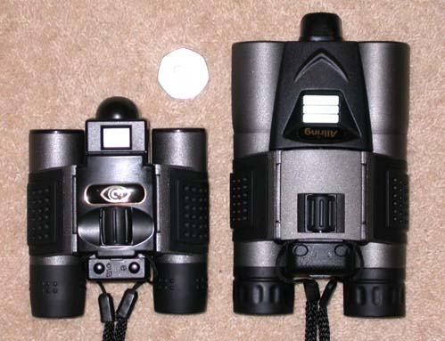
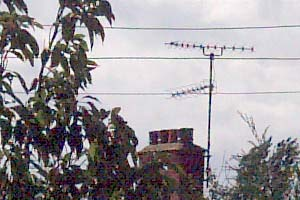
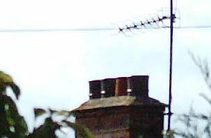
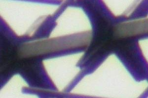
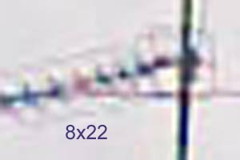
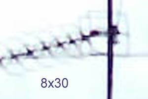
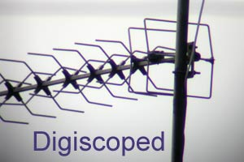

|  |  |
 Binocams
Binocams
Are they any good for Birders?
I tried out 2 of these devices. One is an 8x22 pair of binoculars with no obvious brand name, although I have seen the identical pair advertised under the Allring or Naxos names. The other is a similar but larger pair of 8x30 binoculars with the name of Viewcatcher on the packaging (name of Allring on the binoculars themselves). Both pairs have an inbuilt digital camera. Both are made in Taiwan and are so similar in design that I suspect they come from the same factory.

Now you might think that such modern hi tech devices would be quite expensive, but in fact I got both of these brand new from different sources for around £30 each including postage. And they come with specific USB leads, a soft carrying case and a CD with software to help with getting the pictures onto your PC.
The first surprise is that the optics of the binoculars are quite good. I expected soft images and chromatic aberration but got reasonably sharp images and no obvious distortion or colour fringing. The field of view in both these binoculars is limited considering the 8x magnification, but this is not unusual in compact binoculars.
The negative aspects of the binoculars are perhaps minor but can be annoying. In both case the neck straps are attached at a point which means the binoculars hang at an angle. This makes them uncomfortable to wear as the eyepieces dig into you and you end up holding on to them constantly for comfort's sake. The 8x30's are the brighter pair as would be expected, but they also come with a problem of their own in the eye relief which seems unusually long. This is good news for glasses wearers but means that without glasses the eyepieces have to be held slightly away from your eyes to see the full field of view. The rubber eyecups should have been slightly deeper to deal with this.
The Camera
| You also get a digital camera for your hard earned £30 built in to both of these binoculars. That has to be a bargain, but is it any use? Well, the picture to the right is a portion of a picture taken using the 8x22 setup. It's certainly possible to take pictures suitable for a website of larger birds in good light. |
|

There are, of course, a lot of limitations that make these setups not quite the super cheap answer to all problems that they at first seem.
Starting with the 8x22, the impression is again with good optics. A good sharp picture with good colours is possible in good light. The biggest limitation here is with the camera resolution. While 6 to 10 Megapixel cameras are now common, the 8x22 comes in at 0.3 Megapixels. This gives an image of 640x480 which in fact is quite useable especially for websites. But the bird is likely to be quite small in the frame and this size does not allow for much cropping.
The 8x30 has a better resolution of 1.3 Megapixels (1280x1024), so is this the answer? Unfortunately there are other problems here. Both of these cameras have fixed focus and as any bird photographer knows, the depth of focus is limited with lenses suitable for bird photography. The 8x22 possibly lives up to its claimed depth of focus from 10m to infinity, but the 8x30 fails to live up to its lesser claim of 15m to infinity. Only objects at some considerable distance, perhaps 100m or more are actually in focus. As soon as smaller birds come close enough to be worth attempting a photo, they are so out of focus that the results are useless.
In summary, the 8x22 can take sharp pictures at reasonable distances, but cannot resolve the detail of smaller birds. The 8x30 is only sharp at much longer distances and so cannot resolve the details of small or even large birds when reasonably close. Realistically the 8x30 can only be used to photograph flocks of distant birds.
Are there other differences between or issues with the cameras?
There are some big differences betweeen the cameras in relation to batteries and memory. They both take 2 AAA type battteries and recommend Alkaline types. However the 8x22 is actually dependent on the batteries for the storage of its pictures. The internal 8Mb memory will hold 52 pictures, but you could lose them all if the batteries run low and the batteries are being constantly drained just to keep the memory refreshed. The 16Mb memory in the 8x30 will hold 45 pictures and the pictures are retained even if the batteries are taken out. Also the 8x30 can accept an additional SD card to increase the available memory. This would be a big bonus if you could take good pictures in the first place. They will both actually run on rechargeable batteries, but with the 8x22 they need to be fully charged for one days use and you need to load the pictures to your PC as soon as possible to avoid loss. With the 8x30 you could use rechargeables and switch to standard batteries if necessary without any loss of pictures.
Shutter lag is another digital camera problem which is not too bad on the 8x22 but is truly awful on the 8x30. I attempted to photograph Common Sandpipers with both these cameras and with the 8x22 I got some recognisable shots. With the 8x30 the bird had time to completely walk out of the frame before the picture was actually taken.
 Common
Sandpiper taken with 8x22 binocam. The bird was too close (about 15m)
for a recognisable picture with the 8x30.
Common
Sandpiper taken with 8x22 binocam. The bird was too close (about 15m)
for a recognisable picture with the 8x30.
How do the pictures compare with digiscoped images?
The following pictures are sections of pictures at their natural size from the 8x22, 8x30 and digiscoped through a Kowa telescope with 65mm objective and 30x eyepiece. They are unprocessed apart from a slight levels adjustment for fairer comparison.



Because the 8x30 gives a larger picture it should have more detail. The way to test this is to enlarge the 8x22 image to the same size and for comparison I will shrink the digiscoped picture to the same size as well.



The 8x30 does have the edge over the 8x22 here, but this is quite a distant object. Any closer and the 8x30 loses focus. I suspect that the fixed focus of this particular 8x30 is set too far away for optimum use, even for distant objects. There is obviously a big gulf between these and the digiscoped image. The 8x22 can however be used to capture birds in flight which is hard to do with digiscoping.
There are other similar binocams around and maybe there is one out there which doesn't suffer from bad shutter lag, doesn't lose its pictures when the battery goes flat, does focus close enough to be useful and has a resolution high enough to allow cropping to pick out the bird? I would happily pay much more than £30 for a device which lived up to the promises that these 2 binoculars do not quite live up to. If anyone knows of a better binocam please let me know (and tell me how it's better).
Drivers
I've had a few requests for the drivers for these binocams which may need to be installed on the PC. I dug out the CD for the 8x22 and have put a link below for the driver. I believe that the same driver works for both binocams mentioned here and may well work for yours. I'm not sure but the driver might only be relevant for Windows 98. It is worth checking on Windows XP, Vista or Windows 7 if there is a generic storage device shown in 'My Computer' when the binocam is connected. It is likely that there will be and that you can copy the pictures from there to your hard disk.
email to: kevin@chardres.totalserve.co.uk